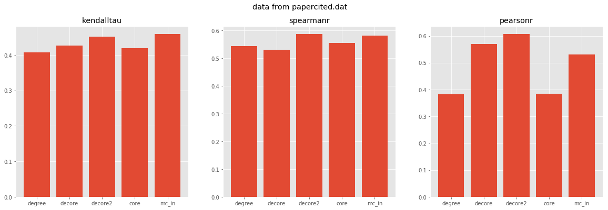
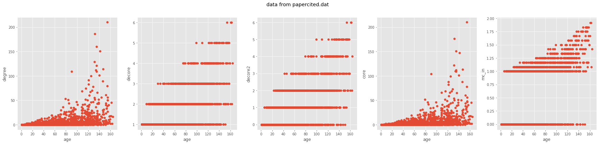
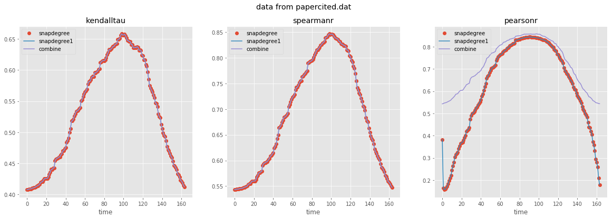
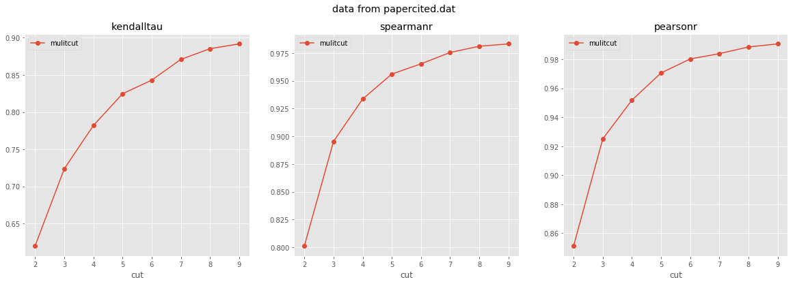

识别网络中节点年龄顺序
利用网络结构和网络时间切片
Created by 崔浩川
各种方法与age的相关性
degree:度
core:K-core分解
decore和decore2的方法，基于网络分解

各种方法的比较
增加一个网络切片
增加多个网络切片
data from email-eu-core
| Nodes | 986 | |
| Temporal Edges | 332334 | |
| Edges in static graph | 24929 | |
| Time span | 803 days |


data from sx-mathoverflow
| Nodes | 24818 | |
| Temporal Edges | 506550 | |
| Edges in static graph | 239978 | |
| Time span | 2350 days |